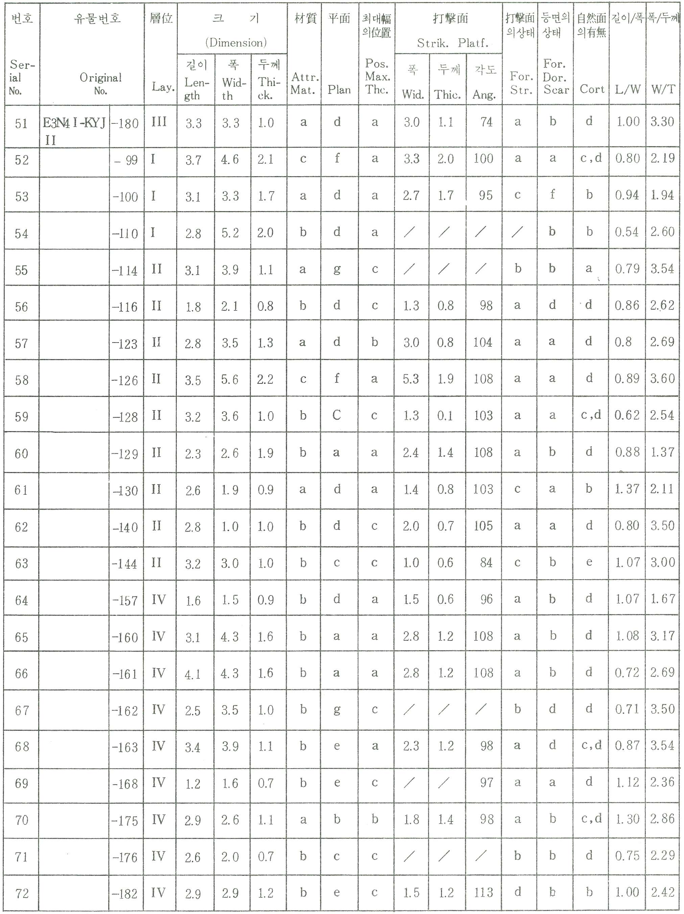
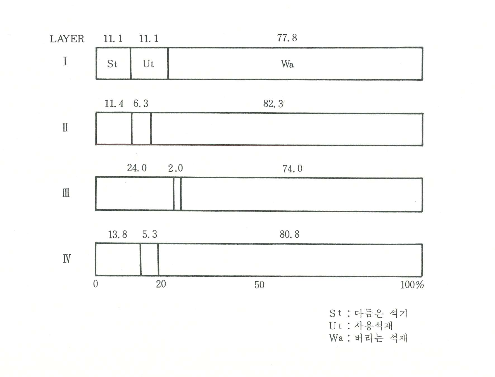
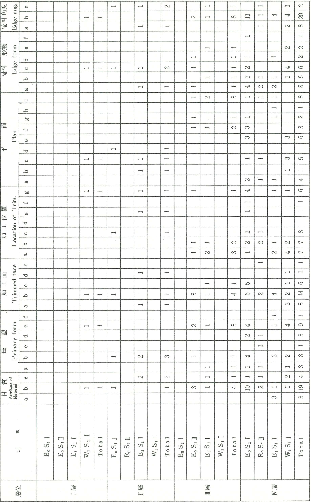
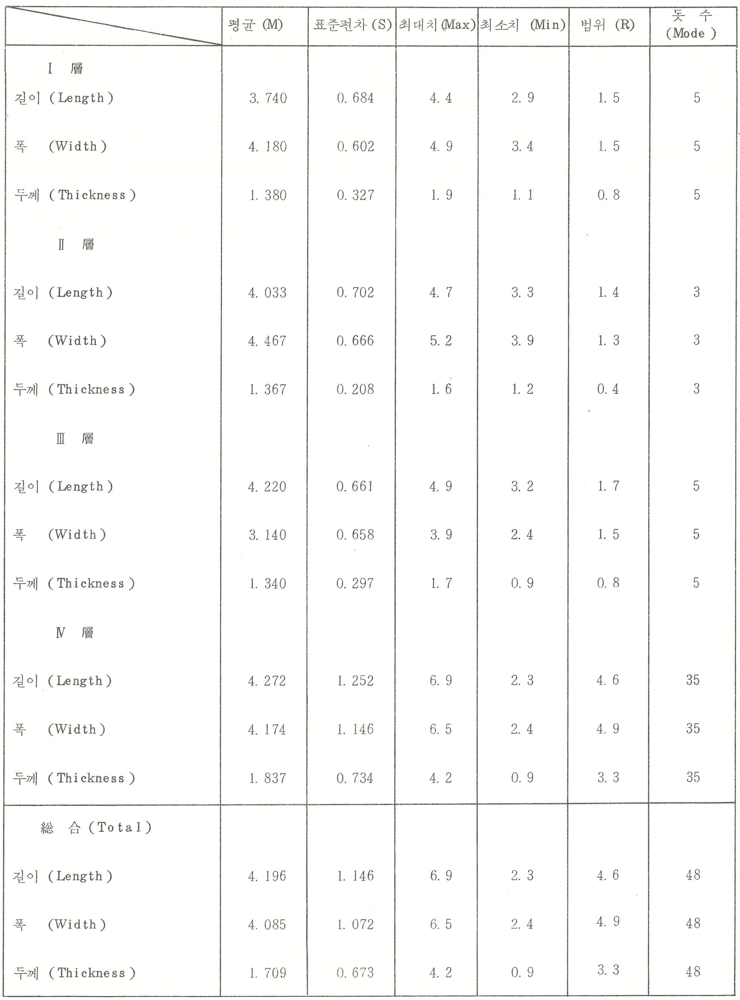

表
〔表1 - 1〕 全谷里出土石器 (1979~1981年) Chongokni Paleolithic Industry (1979-1981) By the S. N. U.
Museum
and the National
〔表1 - 2〕 E2 S1 Ⅱ, E3 S1 Ⅰ・Ⅱ 出土石器 Chongokni
Paleolithic
Industry (1981 By Seoul National University)
〔表1 - 3〕 전곡리 赤色粘土와 各 地域의 뢰쓰(Loess)와의 化學性分 比較 Comparison on chemical Analyses, Chongokni
Red
soil with Loess from various Regions
a (1) Average Peoria loess: (2) average Argentine loess: (3)
average
Malan loess:
(4) Malan loess Lü-Liang: (5) Li-Shih loess Lü-Ling: (6) Wu-Ch’ eng loess
Lü-Liang (7) Chongokni
Red Soil b Includes TiO2
〔表2 - 1〕 出土遺物分類內容(1979年1・2次發掘) (Stone implements, the 1st and 2nd campaign)
〔表2 - 2〕 石器의 原石. 1・2次 發掘(Raw Material)
〔表2 - 3〕 1・2次 發掘 出土遺物 構成比(E1 N2 Ⅰ, E1 N9 Ⅲ,
E6 N6 Ⅳ,
E3 N4 Ⅰ)
〔表2 - 4〕 1・2次發掘層位別 遺物構成比(E1 N1 Ⅰ, E1 N9 Ⅲ,
E6 N6 Ⅳ,
E3 N4 Ⅰ)
〔表2 - 5〕 1・2次發掘 (1979) 出土 다듬은 石器(Shaped tool) 構成比(E1 N1 Ⅰ,
E1 N9 Ⅲ,
E6 N6 Ⅳ, E3 N4 Ⅰ)
〔表2 - 6〕 1・2 次發振出士 다듬은 石器 構成比(層位別)
〔表2 - 7〕 찍개류(양면날・외면날찍개)의 計測表(1979年 1・2次發掘 : E1 N2 Ⅰ,
E1 N9 Ⅲ,
E6 N6 Ⅳ, E3 N4 Ⅰ피트出土)
〔表2 - 7〕 찍개류(양면날・외면날찍개)의 計測表(1979年 1・2次發掘 : E1 N2 Ⅰ,
E1 N9 Ⅲ,
E6 N6 Ⅳ, E3 N4 Ⅰ피트出土)
〔表2 - 8〕 찍개류의 計測値의 統計表 (1979年 1・2次：E1 N2 Ⅰ,
E1 N9 Ⅲ,
E6 N6 Ⅳ, E3 N4 Ⅰ피트出土)
〔表2 - 9〕 1・2次發掘(1979) 出土 찍개류의 길이지수(L/W)와 폭지수(W/T)의 分布
〔表2 - 10〕 찍개類 計測値의 統計表 (Chopper, Chopping-tool)
〔表2 - 11〕 찍개류(Chopper, Chopping-tool)의 計測値의 層位別 統計 막대그림表
〔表 2 - 12〕 긁개류計測表 (1979年 1・2次 發掘 : E1 N2 Ⅰ,
E1 N9 Ⅲ,
E6 N6 Ⅳ, E3 N4 Ⅰ 피트 出土)
〔表2 - 13〕 긁개류석기 統計表 (Summary Statistics for Scraper, 1979)
〔表 2 - 14〕 1・2次發掘 (1979) 出土 긁개류(Scraper)의 길이지수 (L/W) 및 폭지수 (W/T)의 分布
〔表 2 - 15〕 긁개類 (Scraper) 計測値 層位別 統計表
〔表 2 - 16〕 긁개類 計測値 層位別 統計 막대그림表
〔表 2 - 17〕 박편計測表(1979年 1・2次 發掘：E1 N2 Ⅰ, E1 N9 Ⅲ,
E6 N6 Ⅳ,
E3 N4 Ⅰ피트出土)

〔表 2 - 18〕 박편의 統計表 (Summary Statistics for Flake, 1979)
〔表 2 - 19〕 1・2次 發掘 (1979) 出土박편 (Flake) 길이지수 (L/W) 및 폭지수 (W/T)의 分布
〔表 2 - 20〕 박편각 (Flake Angle) 층위별 막대그림표
〔表2 - 21〕 박편의 計測値 層位別 統計表(1979年 1・2次 發掘)
〔表 2 - 22〕 박편計測値의 層位別 統計 막대그림表(1979年 策第 1・2次 發掘）
〔表3 - 1〕 出土遗物 分類內容(1980-1981年3・4次 發掘) Chongokni paleolithic industry 1980-1981
〔表3 - 2〕 石器의 原石 (Raw Material)
〔表3 - 3〕 3・4次發掘 出土遺物 構成比(1985・1981)(E0 S1 Ⅰ・Ⅲ,
E1 S1 Ⅰ,
W1 S1 Ⅰ)
〔表3 - 4〕 3・4次發掘層位別遺物構成表(E0 S1 Ⅰ・Ⅲ, E1 S1 Ⅰ,
W1 S1 Ⅰ)

〔表3 - 5〕 3・4次發掘 (1980・1981) 出土 다듬은 석기(Shaped tool) 構成比 (E0 S1 Ⅰ・Ⅲ,
E1 S1 Ⅰ,
W1 S1 Ⅰ)
〔表3 - 6〕 3・4次發掘出土 다듬은 석기 구성비 (層位比)
〔表3 - 7〕 찍개류(양면날, 외면날찍개의 計測表(1980-1981年 3・4次 發掘 :
E0 S1 Ⅰ・Ⅲ,E1 S1 Ⅰ,W1 S1 Ⅰ피트出土)
〔表3 - 8〕 찍개류의 計測値의 統計表 (1980-1981 3・4次 : E0 S1 Ⅰ・Ⅱ,
E1 S1 Ⅰ,
W1 S1 Ⅰ피트出土) Summary Statistics for Chopper, Chopping-tool 1980-1981
〔表3 - 9〕 3・4次發掘 出土 찍개류의 길이 및 폭지수 分布
〔表3 - 10〕 찍개類 (Chopper, Chopping-tool) 計測値 層位 統計表
〔表3 - 11〕 찍개류 (Chopper, Chopping-tool)計測値의 層位別 統計 막대그림表
〔表3 - 12〕 긁개류 計測表 (1980 - 1981 年：E0 S1 Ⅰ・Ⅱ,
E1 S1 Ⅰ,W1 S1 Ⅰ 피트出土)
〔表3 - 13〕 긁개류 石器에 대한 統計表 (Summary Statistics for Scraper 1980-1981)
〔表3 - 14〕 3・4次發掘(1980・1981) 出土 긁개류(Scraper)의 길이지수(L/W) 및 폭지수(W/T)의 分布
〔表3 - 15〕 긁개類(Scraper) 計測値 層位別 統計表

〔表3 - 16〕 긁개類 計測値 層位別 統計 막대그림表
〔表3 - 17〕 박편 計測表(1980, 1981年度 發掘 : E0 S1 Ⅰ・Ⅱ,
E1 S1 Ⅰ ,
W1 S1 Ⅰ 피트 出土)
〔表3 - 18〕 박편의 統計表 Summary Statistics for Flake, 1980-1981

〔表3 - 19〕 3・4次發掘(1980・1981)出土 박편(Flake)의 길이지수 (L/W)및 폭지수(W/T)의 分布
〔表3 - 20〕 박리각(Flake Angle) 層位別 막대그림표
〔表3 - 21〕 박편 (Flake)의 計測値 層位別 統計表 (1980・1981年 發掘)
〔表3 - 22〕 박편 (Flake) 計測値의 層位別 統計 막대그림表 (1980・1981)
▲ 맨 위로
▼ 맨 아래로